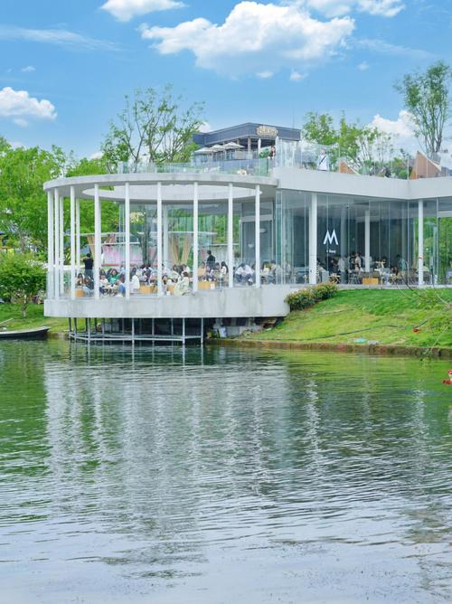
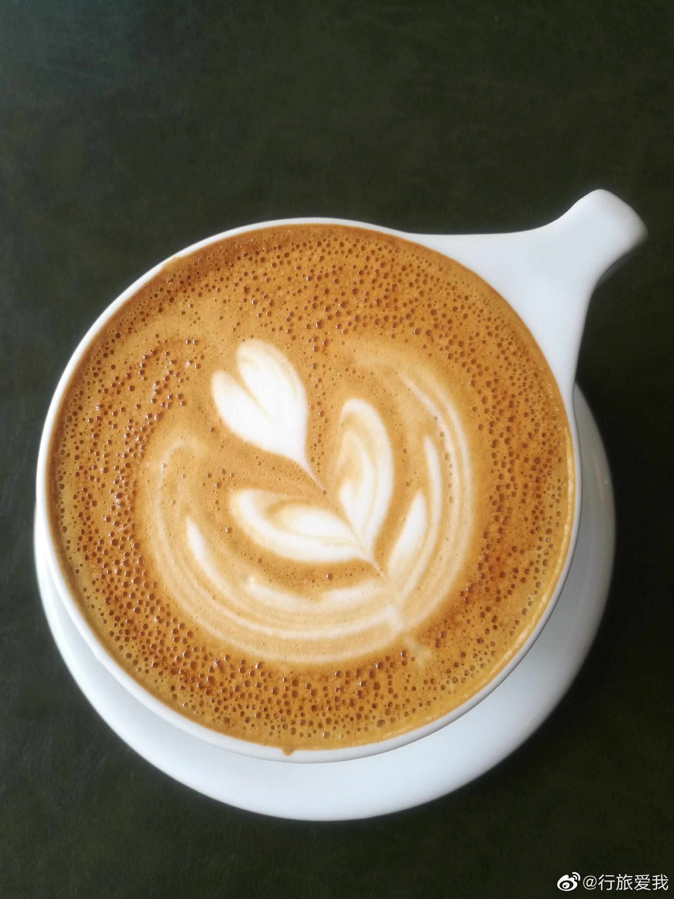
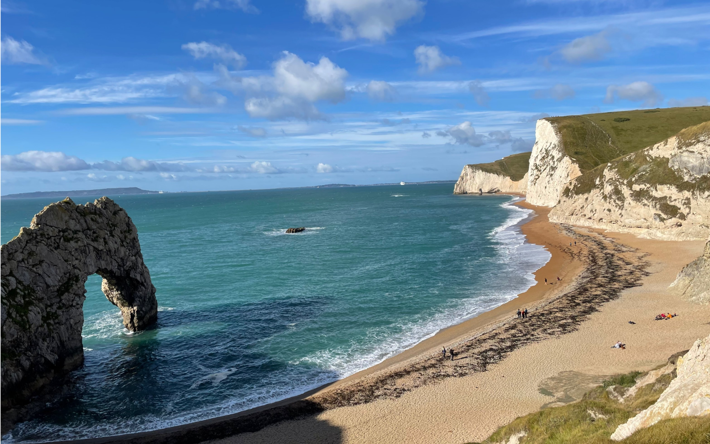

INTRODUCTION OF OUR CAFE
Welcome to Moonlight Bay Café, a cozy and enchanting retreat nestled on the eastern shore of the serene Moonlight Bay, in the charming town of Robinson. Our café offers the perfect blend of tranquility and vibrant energy, where the gentle sound of waves meets the rich aroma of freshly brewed coffee. |
 |
PERFECT ROASTERED COFFEE & SIGNATURE ESPRESSO
At Moonlight Bay Café, we take pride in serving extraordinary coffee, carefully sourced and roasted to perfection. Whether you're looking to savor a quiet morning with a cup of our signature espresso or enjoy a sunset over the bay with a velvety latte, we promise a coffee experience like no other.
|
 |
Our EXTRAORDINARY AND AMAZING location & BEAUTIFUL scene
Our location is simply unmatched—situated right by the bay, guests can enjoy panoramic views of the sparkling water while indulging in the comforting warmth of our café. Whether you're a local or a traveler passing through Robinson, you'll find Moonlight Bay Café the perfect escape for relaxation, inspiration, and delicious flavors.
|
 |